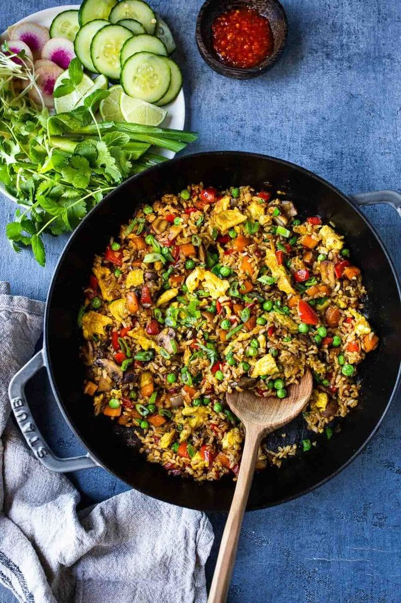

These traditional Indonesian recipes are unique, easy to make, and so full of flavor!. When it comes to Indonesian dishes, there are a few ingredients that you might struggle to find. But there’s almost always a substitution, and you shouldn’t let that get in the way of recreating these vibrant meals at home. From a simple rice side to spicy noodles, these recipes are full of natural flavors from the freshest of ingredients.
If you like things hot, then you’ll love most of these spicy meals, though you can adjust the heat to your liking in almost all of them. Keep this list close because once you try the first incredible Indonesian recipe, you’ll want to work your way through them all!
